spark的外排:AppendOnlyMap与ExternalAppendOnlyMap
AppendOnlyMap/ExternalAppendOnlyMap在spark被广泛使用，如join中shuffle的reduce阶段以及combineByKey操作等。
AppendOnlyMap
AppendOnlyMap是spark自己实现的Map，只能添加数据，不能remove。该Map是使用开放定址法中的二次探测法，不用自带的HashMap等应该是节省空间，提高性能。
数组中a[i]=keyi, a[i+1]=valuei, 即用两个位置来存储kv对。
growThreshold=LOAD_FACTOR * capacity, 当添加的元素超过该值时，数组会进行grow, capacity翻倍，同时所有的kv都会进行rehash重新分配位置。
主要方法：
apply
即调用Map(key)访问value时。根据key的hash(具体是murmur3_32)找到位置，如果目标位置的key与要查找的key不一样，则使用二次探测法继续查找，直到找到为止。
update
找到对应key的value位置，将新value覆盖原value。
changeValue
spark中用的比较多的方法
def changeValue(key: K, updateFunc: (Boolean, V) => V): V = {
...
var pos = rehash(k.hashCode) & mask
var i = 1
while (true) {
val curKey = data(2 * pos)
if (k.eq(curKey) || k.equals(curKey)) {
//当对应的key存在时，updateFunc的第一个参数hadValue=true
val newValue = updateFunc(true, data(2 * pos + 1).asInstanceOf[V])
data(2 * pos + 1) = newValue.asInstanceOf[AnyRef]
return newValue
} else if (curKey.eq(null)) {
//当对应key不存在时，updateFunc的第一个参数hadValue=false
val newValue = updateFunc(false, null.asInstanceOf[V])
data(2 * pos) = k
data(2 * pos + 1) = newValue.asInstanceOf[AnyRef]
incrementSize()
return newValue
} else {
//二次探测法代码
val delta = i
pos = (pos + delta) & mask
i += 1
}
}
...
}
该方法最核心的其实是外部传进来的updateFunc(hadValue, oldValue), updateFunc一般是当hadValue为false时createCombiner(v)作为新value， hadValue为true时mergeValue(oldValue,v),将v加到oldValue中。
iterator
一般是在RDD的compute中会调用该方法，作为RDD操作的Iterator, 即其下游RDD可以为此为数据源。主要也是实现hasNext和next方法，它们都调用了nextValue方法。
nextValue则从pos(初始化是0)开始遍历，直到找到data(2*pos)!=null的，则将结果返回。
hasNext是判断nextValue()!=null。
next是得到nextValue()的返回值，且将pos+=1。
destructiveSortedIterator
转化成一般的数组，并按key对kv进行排序。失去了Map的特性。主要用于外排时将Map排序输出到disk中。
实现思路是：将原数组的值不断向数组左端紧凑移动，且将原先占用两个位置的kv转成(k,v)只占一个位置，然后对数组按key进行kv排序。排序方法是KCComparator,即按key的hashcode进行排序。然后创建一个Iterator,其hasNext和next都是对新的数组进行相应遍历操作。
spark早期版本采用的是AppendOnlyMap来实现shuffle reduce阶段数据的聚合，当数据量不大时没什么问题，但当数据量很大时就会占用大量内存，最后可能OOM。所以从spark 0.9开始就引入了ExternalAppendOnlyMap来代替AppendOnlyMap。
ExternalAppendOnlyMap
note:当spark.shuffle.spill=true时会启用ExternalAppendOnlyMap，默认为true. 为false时就启用AppendOnlyMap

ExternalAppendOnlyMap也在内存维护了一个SizeTrackingAppendOnlyMap(继承于AppendOnlyMap),当该Map元素数超过一定值时就spill到磁盘。最后ExternalAppendOnlyMap其实是维护了一个内存Map:currentMap以及多个diskMap:spillMaps。
主要属性和参数：
currentMap
SizeTrackingAppendOnlyMap,继承于AppendOnlyMap。是ExternalAppendOnlyMap的内存Map。
spilledMaps
new ArrayBuffer[DiskMapIterator]， 每个DiskMapIterator都指向了相应的spill到disk上的文件数据。
maxMemoryThreshold
该值决定了用于该worker上同时运行的任务的currentMap的大小之和，即num(running tasks) * size(各task的currentMap)。该值由spark.shuffle.memoryFraction和spark.shuffle.safetyFraction决定，具体计算方式如下：
val maxMemoryThreshold = {
val memoryFraction = sparkConf.getDouble("spark.shuffle.memoryFraction", 0.3)
val safetyFraction = sparkConf.getDouble("spark.shuffle.safetyFraction", 0.8)
(Runtime.getRuntime.maxMemory * memoryFraction * safetyFraction).toLong //即worker的内存*0.24
}
insert
插入kv对的主要方法。
shouldSpill是剩余空间是否足够让currentMap进行扩容,够的话进行大小翻倍，不够的话则将currentMap spill到disk中。
这里需要判断是否需要进行shouldSpill判断，具体判断逻辑如下：
numPairsInMemory > trackMemoryThreshold && currentMap.atGrowThreshold
numPairsInMemory为已经添加的kv数，trackMemoryThreshold为固定值1000。也就是前1000个元素是可以直接往currentMap放而不会发生spill。
由于currentMap初始时可容纳kv的个数为64，则在numPairsInMemory > trackMemoryThreshold前currentMap还是会发生几次grow。当numPairsInMemory > trackMemoryThreshold时，则currentMap本次到达growThreshold时就要进行shouldSpill的判断。
- 当这个结果是false时，则未达到需要进行shouldSpill判断的条件，则直接currentMap.changeValue(key, update)将kv更新到currentMap中。
- 当这个结果是true时，则需要进行shouldSpill到disk判断。
shouldSpill判断的具体步骤为：根据maxMemoryThreshold以及目前正在运行的其他task的currentMap大小 来判断是否有足够内存来让currentMap的大小翻倍。
val threadId = Thread.currentThread().getId
val previouslyOccupiedMemory = shuffleMemoryMap.get(threadId)
val availableMemory = maxMemoryThreshold -
(shuffleMemoryMap.values.sum - previouslyOccupiedMemory.getOrElse(0L))
// Assume map growth factor is 2x
shouldSpill = availableMemory < mapSize * 2
- shouldSpill=false：让 shuffleMemoryMap(threadId) = mapSize * 2, 即让当前任何占用2倍的空间。 currentMap的扩容会发生之后的currentMap.changeValue里。
- shouldSpill=true: 进行spill操作。
spill
将currentMap写到disk上。具体步骤为：
1、通过currentMap.destructiveSortedIterator(KCComparator)将currentMap变成按key的hashCode进行排序的数组，并封装成相应的Iterator。
2、遍历1得到的Iterator，将kv write到DiskBlockObjectWriter中，但写入量objectsWritten达到serializerBatchSize(批量写到文件的记录数，由spark.shuffle.spill.batchSize控制，默认是10000，太小的话则在写文件时性能变低)时进行writer.flush()将之前的数据写到文件中，并将spill到磁盘的大小记录到batchSizes中，batchSizes记录了每次spill时的数据大小，便于之后的读取(因为批量写到磁盘时经过了压缩序列化，所以读取时要读取与写时等量的数据才可以正常的解压反序列化，所以batchSizes十分重要)
3、不断重复2直到将currentMap的数据全部写到文件中。
4、生成一个DiskMapIterator(用于读取文件数据)，将加到spillMaps中。这里会将batchSizes放到DiskMapIterator并于从文件读取数据。
4、reset工作：
- 生成新的currentMap。
- shuffleMemoryMap(Thread.currentThread().getId)=0即将使用的currentMap容量清0。
- numPairsInMemory重置为0.
iterator
一般是在RDD的compute中会调用该方法，作为RDD操作的Iterator, 即其下游RDD可以为此为数据源。
- 当spillMaps为空,即只有currentMap，从未spill到disk时，直接调用currentMap.iterator()
- 当spillMaps不空时，则要进行外排过程ExternalIterator(和Hadoop的reduce的sort阶段以及hbase的memStore、storeFile遍历类似)
ExternalIterator
外排的主要思想：各个Iterator已经按key.hashcode排好序，利用一个优先队列保存各个Iterator, hasNext是看优先队列是否有元素，next则是返回当前最小hashcode的最小key对应的所有value合并成的combine,即(minKey,minCombiner)。
具体实现如下：
1、各个Iterator: 由currentMap.destructiveSortedIterator形成的Iterator以及spillMaps中的DiskMapIterator
2、优先队列为mergeHeap = new mutable.PriorityQueue[StreamBuffer]，StreamBuffer的主要方法如下：
private case class StreamBuffer(iterator: Iterator[(K, C)], pairs: ArrayBuffer[(K, C)])
extends Comparable[StreamBuffer] {
def isEmpty = pairs.length == 0
// Invalid if there are no more pairs in this stream
def minKeyHash = {
assert(pairs.length > 0)
pairs.head._1.hashCode()
}
override def compareTo(other: StreamBuffer): Int = {
// descending order because mutable.PriorityQueue dequeues the max, not the min
if (other.minKeyHash < minKeyHash) -1 else if (other.minKeyHash == minKeyHash) 0 else 1
}
}
}
StreamBuffer存的是某个Iterator,以及该Iterator按某个key.hashCode聚合的结果。其compareTo决定了其在mergeHeap的位置。StreamBuffer的key.hashCode都是一样的，这样minKeyHash可以从其存储的数据集中随便取一个就行。这里会让hashCode相同的两个key同时存到这个StreamBuffer中，也就是key不相同，这里会有问题吗，后面的讲到的mergeIfKeyExists会进行key是否相同的判断。
3、将各个Iterator转成StreamBuffer, 这个过程需要获得各个Iterator最小的keyHash对应的所有kv对，具体实现是getMorePairs方法。
private def getMorePairs(it: Iterator[(K, C)]): ArrayBuffer[(K, C)] = {
val kcPairs = new ArrayBuffer[(K, C)]
if (it.hasNext) {
var kc = it.next()
kcPairs += kc
val minHash = kc._1.hashCode()
while (it.hasNext && kc._1.hashCode() == minHash) {
kc = it.next()
kcPairs += kc
}
}
kcPairs
}
该方法十分简单，就是获得第一个key.hashCode即最小的minHash(因为Iterator已经按key.hashCode排好序)，然后获得和minHash相同的所有kv对。
4、hasNext：mergeHeap优先队列是否为空
5、next: 外排的核心逻辑。
a、mergeHeap.dequeue()将队列顶最小的StreamBuffer出队列并加到mergedBuffers(mergedBuffers为了记录出队的StreamBuffer,便于下一轮继续加入)中，得到minHash,以及(minKey, minCombiner)。
b、然后要去剩下的StreamBuffer上获得和minHash相同的kv对，并与(minKey, minCombiner)进行合并。从队列顶不断dequeue与minHash相同的StreamBuffer并加到mergedBuffers中,每取到一个StreamBuffer则进行value合并，合并具体调用mergeIfKeyExists。
private def mergeIfKeyExists(key: K, baseCombiner: C, buffer: StreamBuffer): C = {
var i = 0
while (i < buffer.pairs.length) {
val (k, c) = buffer.pairs(i)
if (k == key) {
buffer.pairs.remove(i)
//baseCombiner即b中的minCombiner。这里mergeCombiners的原因是在currentMap中的updateFunc时生成的是Combiner
return mergeCombiners(baseCombiner, c)
}
i += 1
}
baseCombiner
}
这里只有与minKey相同的kv才会被选取与minCombiner进行合并且从对应的StreamBuffer中移除，否则仍保留。
c、遍历mergedBuffers即dequeue的各StreamBuffer判断其是否还有kv对，没有的话则重新调用getMorePairs获得下一波kv对。 然后将StreamBuffer再次enqueue到mergeHeap中进行重新排序。当然如果某个StreamBuffer还是没kv对，则说明对应的Iterator已经遍历完，不需要再加到mergeHeap中。
d、返回(minKey,minCombiner)
DiskMapIterator
从disk文件读取数据形成Iterator。
hasNext:是否读到文件末尾
next: 先调用nextBatchStream()将batchSizes.remove(0)即当前要读的数据量的数据读到bufferedStream中，然后每次next都从该缓存中获得kv对，当缓存中数据取完时又调用nextBatchStream()重新从文件批量读取下块数据。